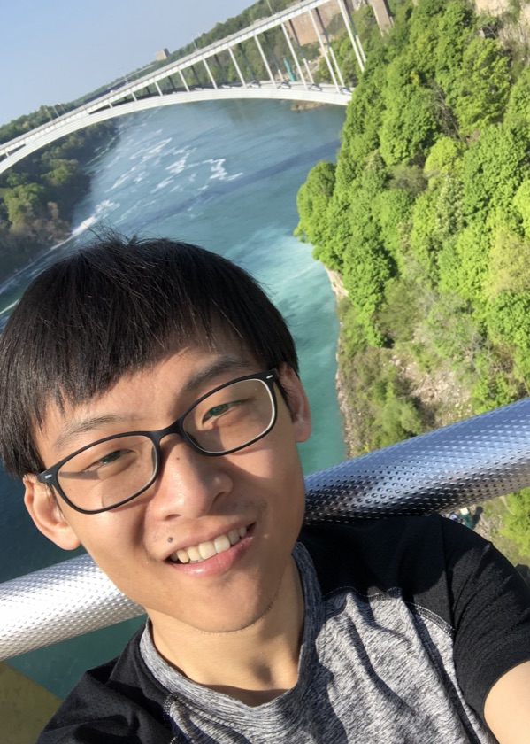

Zhijie Qu (屈稚杰)

Zhijie Qu is an Assistant Professor in the Department of Astronomy at Tsinghua University. His research probes the multiphase diffuse gas in the cosmic ecosystem — the circumgalactic medium (CGM), the interstellar medium (ISM), and the intergalactic medium (IGM) — to understand the baryon cycle that drives galaxy formation and evolution.
His work characterizes the thermodynamic and kinematic properties of diffuse gas across more than four orders of magnitude in temperature (∼104 to >106 K), leveraging multi-wavelength observations including UV/optical absorption spectroscopy, radio HI 21cm surveys, X-ray data, and the Sunyaev–Zeldovich effect. These complementary techniques constrain the density, temperature, and non-thermal motions of gas from the cool, accreting phase to the hot, feedback-driven phase.
He received the IAU PhD Prize (Galaxies and Cosmology) in 2021 for his doctoral work at the University of Michigan. Prior to joining Tsinghua in 2025, he was a KICP Associate Fellow at the University of Chicago (2021–2025). He earned his B.S. in Astronomy with Honors from Peking University in 2015.